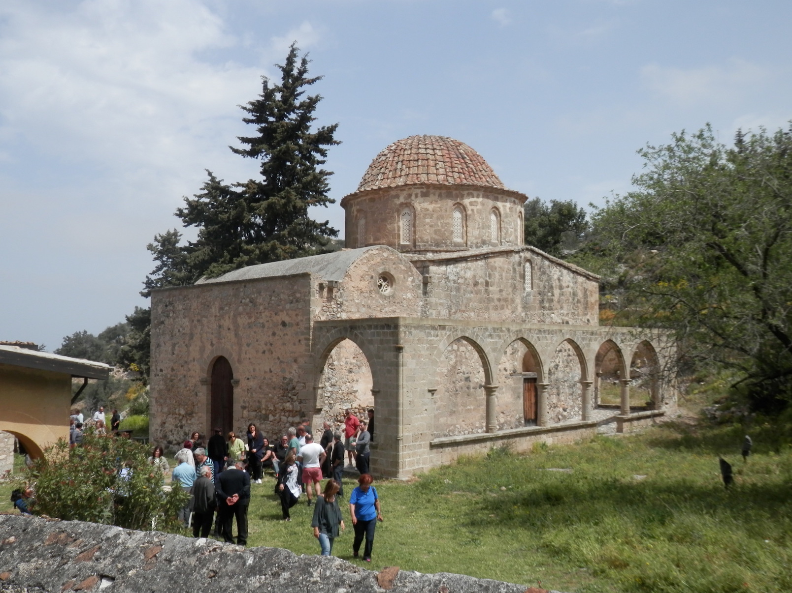

Βρίσκεται στο χωριό Καλογραία στην επαρχία Κερύνειας. Πρόκειται για βυζαντινή μονή με ναό οκταγωνικού τύπου (είναι ο μοναδικός καλά σωζόμενος οκταγωνικός ναός της Κύπρου).Το μοναστήρι του Αντιφωνητή κτίστηκε κατά τη Βυζαντινή περίοδο, στα τέλη του 12ου αι. ως καθολικό μοναστήρι σε μια ειδυλλιακή τοποθεσία στο δάσος του Πενταδακτύλου. Στα τέλη του 15ου – αρχές 16ου αι. το κτίριο τροποποιήθηκε. Προστέθηκε στο ναό ο νάρθηκας στα δυτικά και μια ανοικτή στοά στη νότια πλευρά της εκκλησίας. Το 12ο αι. η εκκλησία διακοσμήθηκε με τοιχογραφίες και ακολούθησε ακόμη μια μεγαλύτερη σειρά τοιχογραφιών στα τέλη του 15ου – αρχές 16ου αι.. Οι πρώιμες τοιχογραφίες σώζονταν στην αψίδα, στις καμάρες του βήματος, στους ανατολικούς ελεύθερους κίονες του ναού, στο δυτικό κίονα του νότιου τοίχου και στο νοτιοδυτικό ημιχώνιο. Στις τοιχογραφίες εικονίζονταν: η Θεοτόκος στον τύπο της Βλαχερνίτισσας μεταξύ των αρχαγγέλων Μιχαήλ και Γαβριήλ, ιερουργούντες ιεράρχες, η Ανάληψη του Χριστού, οι άγιοι Νικόλαος, Συμεών ο Στυλίτης, Δημητριανός, Δανιήλ ο Στυλίτης, Τριφύλλιος, Συμεών ο Θαυματουργός, Φώτιος και Πολυχρόνιος. Επίσης εικονογραφήθηκε η Γέννηση, η Υπαπαντή, η Βάπτιση του Χριστού και η Μεταμόρφωση. Κατά τα τέλη του 15ου – αρχές 16ου αι. στο κέντρο του τρούλου εικονογραφήθηκε ο Χριστός Παντοκράτορας και γύρω του η Δέηση και πλήθος αγγέλων. Χαμηλότερα εικονίζονταν οι απόστολοι καθισμένοι σε θρόνους και ανάμεσα στα παράθυρα του τρούλου οι δεκαέξι προφήτες. Στο βόρειο τοίχο βρισκόταν εικονισμένη η Μέλλουσα Κρίση – Δευτέρα Παρουσία. Ο νότιος τοίχος κοσμείτο από την πολυπρόσωπη σκηνή της Ρίζας του Ιεσσαί. Επίσης, το βορειοδυτικό ημιχώνιο έφερε σκηνές από τη ζωή της Θεοτόκου. Το τέμπλο του ναού ήταν του 16ου αι. και ήταν ξυλόγλυπτο , το εικονοστάσι διατηρούσε εικόνες του 16ου αι., ένα βημόθυρο του 16ου αι. και ένα του 17ου αι.
Οι τοιχογραφίες διατηρούντο σε καλή κατάσταση μέχρι το 1974. Στα χρόνια που ακολούθησαν την τουρκική εισβολή του νησιού ο ναός έγινε θύμα συστηματικής σύλησης. Καταστράφηκαν και αφαιρέθηκαν τοιχογραφίες αλλά και εκκλησιαστικές εικόνες και εκκλησιαστικά ξυλόγλυπτα αντικείμενα. Τα κεφάλια των δύο αρχαγγέλων στην αψίδα του ναού καταστράφηκαν, αφαιρέθηκε το άνω τμήμα της σκηνής της Γέννησης του Χριστού και ο Παντοκράτορας στον τρούλο πυροβολήθηκε με κυνηγετικό όπλο.
Οι σημαντικές τοιχογραφίες της Μέλλουσας Κρίσης και της Ρίζας του Ιεσσαί τεμαχίστηκαν και αφαιρέθηκαν από το ναό. Πολλά τμήματα καταστράφηκαν κατά την αφαίρεση αυτή. Τουλάχιστον εξήντα τμήματα των τοιχογραφιών αυτών βρέθηκαν στο Μόναχο και τριάντα δύο τμήματα επαναπατρίστηκαν το 1997. Τα υπόλοιπα τμήματα βρέθηκαν το 1997 από την αστυνομία του Μονάχου στην κατοχή του Τούρκου αρχαιοκάπηλου Aydin Dikmen.
Το Μάιο του 1995 τέσσερις εκκλησιαστικές εικόνες (Ευαγγελιστές Μάρκος και Ιωάννης και Απόστολοι Πέτρος και Παύλος) του 16ου αι. οι οποίες αφαιρέθηκαν λίγο μετά το 1974 από το ξυλόγλυπτο εικονοστάσι της εκκλησίας του Αντιφωνητή, βρέθηκαν στην κατοχή του Ολλανδού Willem Otto Arie Lans. Τον Οκτώβριο του 1996 η Εκκλησία της Κύπρου και η Κυπριακή Κυβέρνηση υπέβαλαν μήνυση στο Ρότερνταμ για να επαναπατρισθούν οι τέσσερεις αυτές εικόνες. Δυστυχώς, το Φεβρουάριο του 1999 το Επαρχιακό Δικαστήριο του Ρότερνταμ αποφάσισε ότι οι εκκλησιαστικές εικόνες πρέπει να παραμείνουν στην κατοχή του ηλικιωμένου ζεύγους Ολλανδών οι οποίοι είχαν αγοράσει τις εικόνες από έναν Αρμένιο συλλέκτη λίγο μετά την εισβολή του 1974. Παρόλο που το δικαστήριο επιβεβαίωσε ότι οι εικόνες προέρχονται από την εκκλησία του Αντιφωνητή, αποφάσισε ότι δεν μπορούν να επιστραφούν στην Εκκλησία της Κύπρου αφού η Ολλανδία δεν είχε θέσει σε εφαρμογή τη Συνθήκη της Χάγης σχετικά με την επιστροφή αντικειμένων τα οποία αποκτήθηκαν κατά τη διάρκεια πολέμου. Επίσης δεν υπήρχαν στοιχεία τα οποία να αποδείκνυαν ότι οι εικόνες αγοράστηκαν με κακές προθέσεις. Η δίκη εκκρεμεί ενώπιον δικαστηρίου στο Ρόττερνταμ.
Μονή Αντιφωνητή και παράδοση
Ο Αρχάγγελος… εγγυητής
Σύμφωνα με την παράδοση, στην περιοχή που είναι χτισμένο σήμερα το μοναστήρι, βρισκόταν στα παλιά τα χρόνια ένας μικρός συνοικισμός με λιγοστά και φτωχικά σπιτάκια και μια μικρή εκκλησία αφιερωμένη στον Αρχάγγελο Μιχαήλ.
Ένας από τους κατοίκους του συνοικισμού, φτωχός πολύ και με μεγάλη οικογένεια, μη ξέροντας τι να κάμει, πήρε τη μεγάλη απόφαση να ξενιτευτεί. Πώς να φύγει όμως, που χρειαζόταν χρήματα για το ταξίδι κι αυτός δεν είχε ούτε δεκάρα;
Ξαφνικά θυμήθηκε πως μόνο ένας θα μπορούσε να τον βοηθήσει και να του δανείσει τα χρήματα που χρειαζόταν. Ήταν ένας Εβραίος, πολύ πλούσιος, που έμενε λίγο έξω από το συνοικισμό. Σ’ αυτόν, λοιπόν, θα πήγαινε.
Χωρίς να χάσει καιρό, πήγε στο σπίτι και ανέφερε το σκοπό της επίσκεψής του. Ο Εβραίος φάνηκε πρόθυμος να τον βοηθήσει. Μόνο που του ζήτησε να βρει κάποιον που να τον εγγυηθεί ότι θα του επέστρεφε τα χρήματα μέσα σε τρία χρόνια. Ο φτωχός χριστιανός πρότεινε στον Εβραίο να βάλει εγγυητή του τον Αρχάγγελο. Ο Εβραίος δέχτηκε. Ετοίμασε το χαρτί, πήγαν κι οι δυο στην εκκλησία και μπροστά στην εικόνα του Αρχάγγελου το υπέγραψε και πήρε τα χρήματα.
Την άλλη μέρα, αφού αποχαιρέτησε τη γυναίκα και τα παιδιά του, κατέβηκε κάτω στην παραλία, μπάρκαρε και πήγε στα μέρη της Καραμανιάς. Εκεί βρήκε δουλειά, δούλεψε τίμια και σκληρά και σιγά σιγά, με τη βοήθεια του Θεού, έγινε πλούσιος. Αγόρασε μάλιστα και δικό του καράβι και έγινε έμπορος.
Ο Αρχάγγελος αντιφώνησε!
Σένα ταξίδι του, περνώντας από τα βόρεια παράλια της Κύπρου, θυμήθηκε το χρέος του και σκεφτόταν με ποιο τρόπο να στείλει τα χρήματα στον Εβραίο. Ξαφνικά του ήρθε μια ιδέα. Πήρε ένα μπουκάλι, έβαλε μέσα τα χρήματα μ’ ένα σημείωμα, το έκλεισε καλά και το ρίξε στη θάλασσα, Παρακάλεσε τον εγγυητή του, να φροντίσει ώστε το μπουκάλι με τα χρήματα να φτάσει στα χέρια του Εβραίου.
Μια μέρα, καθώς ο Εβραίος έκανε μπάνιο κάτω στην παραλία, βρήκε το μπουκάλι με τα χρήματα. Διάβασε και το σημείωμα και χαμογέλασε πονηρά. Κι όταν ο ήλιος πήγαινε προς τη δύση του, γύρισε σπίτι.
Τον άλλο χρόνο, ο χριστιανός, πλούσιος πια, πούλησε το καράβι του και γύρισε στην οικογένειά του. Ο Εβραίος τον επισκέφτηκε αμέσως και του ζήτησε τα χρήματα. Εκείνος του είπε πως του τα στείλε, μα ο Εβραίος ορκιζόταν πως δεν τα πήρε. Συμφώνησαν τότε να πάνε μαζί στην εκκλησία να ρωτήσουν τον εγγυητή του να τους φανερώσει την αλήθεια.
Σαν μπήκαν μέσα στην εκκλησία, ο χριστιανός προχώρησε, γονάτισε μπροστά στην εικόνα του Αρχάγγελου και με δάκρυα στα μάτια ρώτησε:
– Αρχάγγελέ μου Μιχαήλ, εσύ που είσαι ο εγγυητής μου, πες μας, πήρε ή δεν πήρε τα χρήματα ο Εβραίος;
Τότε ακούστηκε αυστηρή και βροντερή η φωνή του Αρχάγγελου να λέει:
– Τα πήρες, Εβραίε, τα πήρες και μάλιστα ήταν μέρα Παρασκευή.
Αμέσως άστραψε η εκκλησία και ο Εβραίος έπεσε στο πάτωμα τυφλός, σαν να τον χτύπησε κεραυνός. Ο κόσμος που μαζεύτηκε σε λίγο στην αυλή της εκκλησίας, άρχισε να φωνάζει:
– «Ο Αρχάγγελος αντιφώνησε. Ο Αρχάγγελος έκανε το θαύμα του!»
Έτσι ο Αρχάγγελος Μιχαήλ πήρε το όνομα Αντιφωνητής.
Η Ιερά Μονή Αντιφωνητή, πανηγυρίζει στις 6 Σεπτεμβρίου ημέρα που ο Αρχάγγελος αντιφώνησε
και 8 Νοεμβρίου γιορτή Αρχαγγέλου Μιχαήλ.
